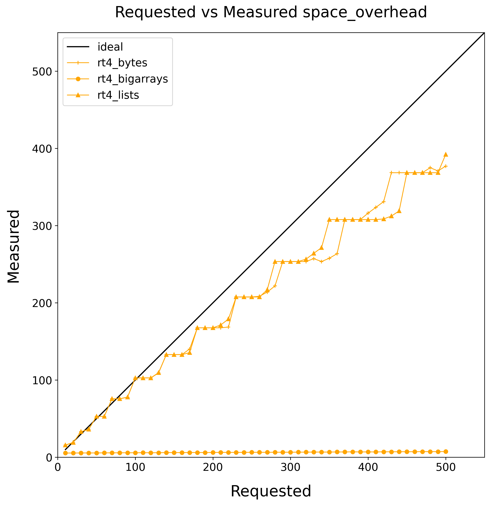

The Saga of Multicore OCaml
Yaron Minsky
2025
Let’s start with the paper
Retrofitting Parallelism onto OCaml, ICFP 2020
- A modern, high-performance multi-core GC for OCaml
- Easy to maintain, easy to adopt.
- One runtime for parallel and sequential
- Preserving sequential performance, pause times, FFI
Lots of benchmarks and evaluation!
- Runtime loss of ~3% for sequential programs
- Memory used is similar
- Pause times very similar
- Good speedups
It did take a while, though…
- 2013: OCaml Multicore project born
- 2015: “Effect Handlers for OCaml” presented at OCaml Workshop
- 2019: Sandmark benchmark suite created
- 2020: “Retrofitting Parallelism onto OCaml” published
- 2020: Core team commits to upstreaming multicore
- 2021: “Retrofitting Effect Handlers to OCaml” published
- 2022: OCaml 5.0 released with multicore GC and effects
- 2023-09: prefetching restored (5.1)
- 2023-11: OCaml 5.1 merged to JS branch, w/both runtimes
- 2023-12: JS benchmarks find serious performance regressions
- 2024-05: compaction restored (5.2)
- 2025-01: statmemprof restored (5.3)
- 2025-05: Regressions fixed, multicore is GA at JS
What is OCaml’s GC like?
Runtime 4
- Sequential
- Generational
- With a write-barrier
- Mark & Sweep
- Incremental
- Snapshot-at-the-beginning
- Mostly open-loop pacing
- Supporting external memory
Runtime 5
SequentialParallel- Minor heap
- One minor heap per domain
- stop-the-world collection
- Major heap
- Shared heap
- Merged mark/sweep design
- Stop-the-world sync at cycle end
- Safe-points
Regressions
- Some programs running 10-20% slower
- Some programs using 10-20% more memory
Sources
- Transparent huge-pages not getting allocated
- GC pacing problems
- Slow context switching in systhreads
- Slow stack checks
Transparent Huge Pages
Background
- Traditional pages are 4kb, “Huge” pages are 2Mb (or 1GB)
- Huge savings in TLB pressure
- Transparent huge pages is when the OS does it for you, implicitly
What happened?
- Worked in 4.14, failed under 5.0
- Serious effect, 3x slowdown in pathological benchmark
What happened to our hugepages?
Runtime 4
- Grow in big chunks
- Compaction into one big space
- No clever virtual-memory games
Runtime 5
- Grows in small increments
- Compaction into 32k chunks
- Guard pages to break up the minor heap
Solution
- Grow heap in big chunks instead
- Compact into one big region
- Carefully align minor heaps
How does pacing work?
Runtime 4
- Constant amount of collection per word promoted.
- External memory
- extra_heap_resources determines when to do an extra cycle
- Increment by N/kH on every external alloc
Runtime 5
- Same pacing approach for ordinary allocations
- Fixed a bunch of implementation bugs
GC Pacing Results
GC Pacing Results (rt4)

GC Pacing Results (rt5)

What happened?
- Ordinary collection is less aggressive
- Unified mark & sweep => too much floating garbage (~25%)
- Fix with markdelay patch, breaking them back up
- But excessive collection with bigstrings is better
- One bugfix made allocation less aggressive
- (But others made it more aggressive)
GC Pacing Results (rt5)
GC Pacing Results (rt5-markdelay)

Where are we now?
- Ordinary pacing is better (though still not quite right)
- Excessive collection is worse
What next?
- Tried to fix some of the design bugs
- e.g., N/kH uses the wrong notion of H
- But…results were hard to tune and control
Open-loop and Closed-loop pacing
Open-loop
graph LR
Obs --> DecPredictable, but has a hard time hitting the target
Closed-loop
graph LR
Obs --> Dec
Dec --> ObsCan hit the target precisely, but often oscillates or converges too slowly
Back to the drawing board!
- Rethinking the steady-state analysis, an open-loop solution was found!
- Constant number of words collected per word allocated
- But an extra word of sweeping per on-heap byte
GC Pacing Results (rt5-markdelay)
GC Pacing Results (rt5-open-loop)

Things we learned
Benchmarking is hard
- Original testing leaned too much on small programs
- Different use-cases put different pressures on the design
- Takeaway: More of the initial evaluation should have been real systems.
Performance debugging is hard
- Problems cover each other
- Too much time spent implementing full solutions to non-problems
- Takeaway: More focused benchmarks and proof-of-concept fixes while iterating on the solutions
Things we learned
Go back to the drawing board, sometimes
- We knew external memory handling was hacky
- We tried to fix the issues incrementally
- But a first-principles approach turned out better
Things we learned
Backwards compatibility is hard
Every change breaks someone’s workflow.

What’s next?
Data Race Freedom à la Mode, POPL 2025
- Propagating type information through our libraries
- And fixing data-races!
- High-performance data-structures
- User-level scheduling
- Profiling and analysis tools
- New abstractions for efficiently combining parallelism and concurrency
- Teaching people how to use it!
Stay tuned!